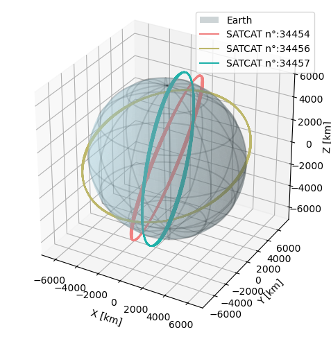

Propagate TLEs#
In this notebook, we show how to use \(\partial \textrm{SGP4}\) for the propagation of two-line elements (TLE) data
import dsgp4
import torch
%matplotlib inline
Single TLE propagation#
First, we tackle the case in which we have a given TLE, and we would like to propagate it at future time(s).
#we load all TLEs:
tles = dsgp4.tle.load("example.tle")
#we only extract the first one:
my_tle = tles[0]
#we always have to initialize the TLE before we can use it. If that does not, it can be directly initialized during propagation (with a small performance penalty):
dsgp4.initialize_tle(my_tle)
tensor([1.1812e-04, 9.6660e-12, 0.0000e+00, 3.7596e-03, 5.7231e+00, 1.2926e+00,
5.5809e-01, 6.2651e-02, 4.8993e+00])
Note
In case the TLE has not been initialized, it is also possible to call the propagate method, and let it initialize it. For that, it is enough to pass the boolean flag initialized as False (otherwise, it defaults as True)
#I propagate for 1 day:
tsinces = torch.linspace(0,24*60,10000)
state_teme=dsgp4.propagate(my_tle,tsinces)
dsgp4.plot_orbit(state_teme,
color='lightcoral',
label=f'SATCAT n°: {my_tle.satellite_catalog_number}')
<Axes3D: xlabel='X [km]', ylabel='Y [km]', zlabel='Z [km]'>
Batch TLE propagation#
Here, we show how to to propagate batches of TLEs in parallel
#we first need to prepare the data, the API requires that there are as many TLEs as times. Let us assume we want to
#propagate each of the
tsinces = torch.cat([torch.linspace(0,24*60,10000)]*len(tles))
#first let's initialize them:
dsgp4.initialize_tle(tles)
#then let's construct the TLEs batch by making sure there are as many TLEs as times:
tles_batch=[]
for tle in tles:
tles_batch+=[tle]*10000
#we propagate the batch of 3,000 TLEs for 1 day:
states_teme=dsgp4.propagate_batch(tles_batch,tsinces)
#Let's plot the first orbit:
ax=dsgp4.plot_orbit(states_teme[:10000],
color='lightcoral',
label=f'SATCAT n°:{tles[0].satellite_catalog_number}')
ax=dsgp4.plot_orbit(states_teme[10000:20000],
ax=ax,
color='darkkhaki',
label=f'SATCAT n°:{tles[1].satellite_catalog_number}')
ax=dsgp4.plot_orbit(states_teme[20000:],
ax=ax,
color='lightseagreen',
label=f'SATCAT n°:{tles[2].satellite_catalog_number}')
